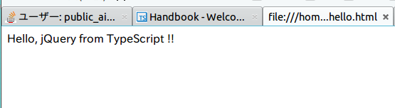

TypeScriptでjQueryを扱う with tsd
jQueryだけでなく、angular.jsなども使えます。
- tsd : JavaScriptファイルをTypeScriptで扱うための型情報ファイルを簡単に落としてこれる
- 型ファイルはここから落とされる
- 前提条件
- npmコマンドが使える
- tscコンパイラを扱う環境が整っている -> Ubuntu15.04にnodejsとtypescriptを入れた
- gitコマンドが使える
以下手順。
tsdのインストール
$ npm install -g tsdtsdを使ってjQueryを型情報ファイルを(カレントディレクトリに)落としてくる
型情報ファイルは./typingsディレクトリ以下に自動で落とされるので、ファイルが散らばるとかはありません。
$ tsd install jqueryjQuery自体を落とすのを忘れずに
$ wget http://code.jquery.com/jquery-2.1.4.min.js ( ブラウザなどで落としてきてもいい )
jQueryを使った型安全プログラミング
まずは、なんの変哲もないhtmlファイルです。
hello.html
<!DOCTYPE html>
<html lang="ja">
<head>
<meta charset="UTF-8">
<title></title>
<script type="text/javascript" src="./jquery-2.1.4.min.js"></script>
<script type="text/javascript" src="./hello.js"></script>
</head>
<body>
</body>
</html> 次にTypeScriptをコンパイルしてみます。
まずは、ちゃんと型エラーが出るか確認。
hello.ts
// jQueryの型情報を読み込みます
/// <reference path="./typings/jquery/jquery.d.ts"/>
$(() => { $("body").html(10); });$ tsc hello.ts
hello.ts(2,26): error TS2345: Argument of type 'number' is not assignable to parameter of type '(index: number, oldhtml: string) => string'.多分、別のオーバーロードと思われてますね。
コンパイル弾かれたので成功っ！
今度は正しく動くか試してみます。
hello.ts
// jQueryの型情報を読み込みます
/// <reference path="./typings/jquery/jquery.d.ts"/>
$(() => { $("body").html("Hello, jQuery from TypeScript !!"); });$ tsc hello.ts エラーが出ませんでした！
カレントディレクトリを見てみると、hello.jsというファイルができています。
できた。
ブラウザでhello.htmlを開いてみます。

できた！
この記事はこちらから修正リクエストを送ることができます。
TypeScriptでjQueryを扱う with tsd - github
ゴミ箱ボタンの左にある、鉛筆ボタンを押してね！